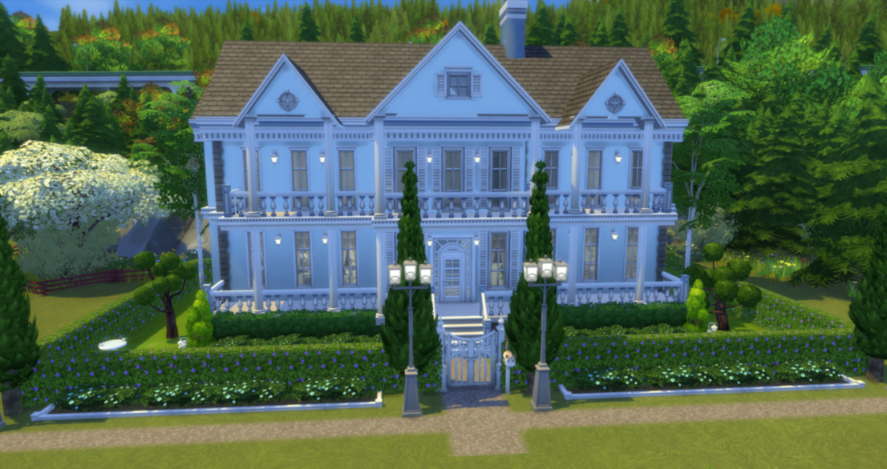
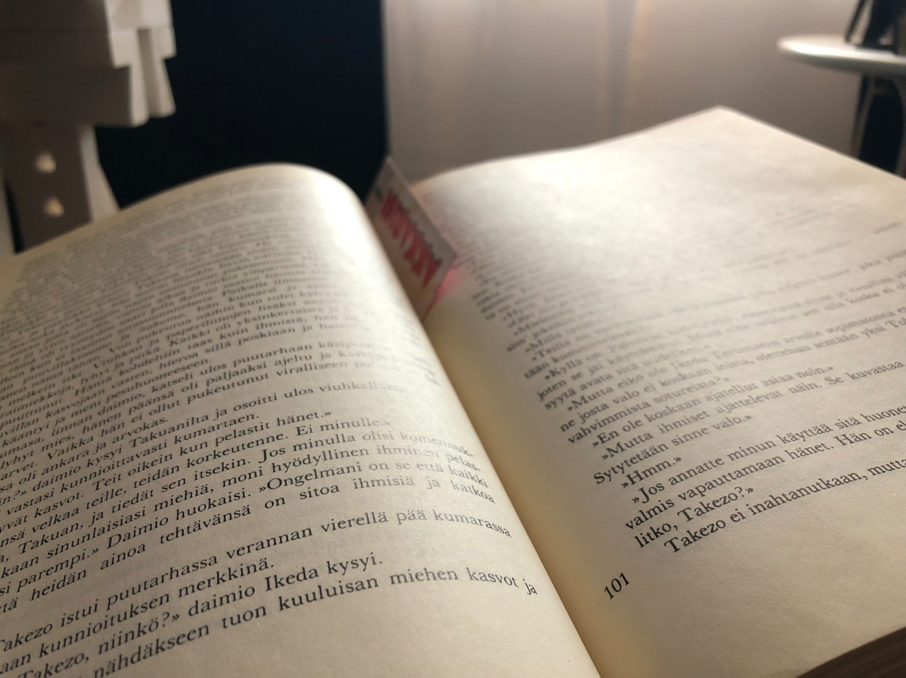
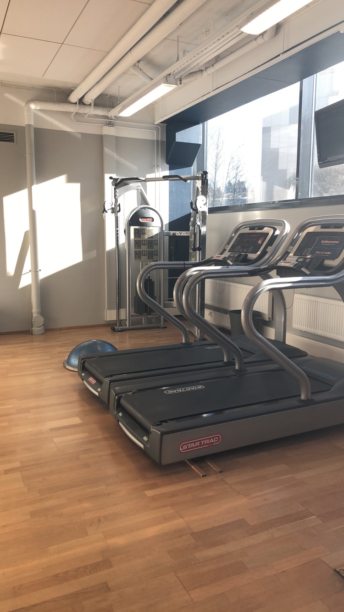
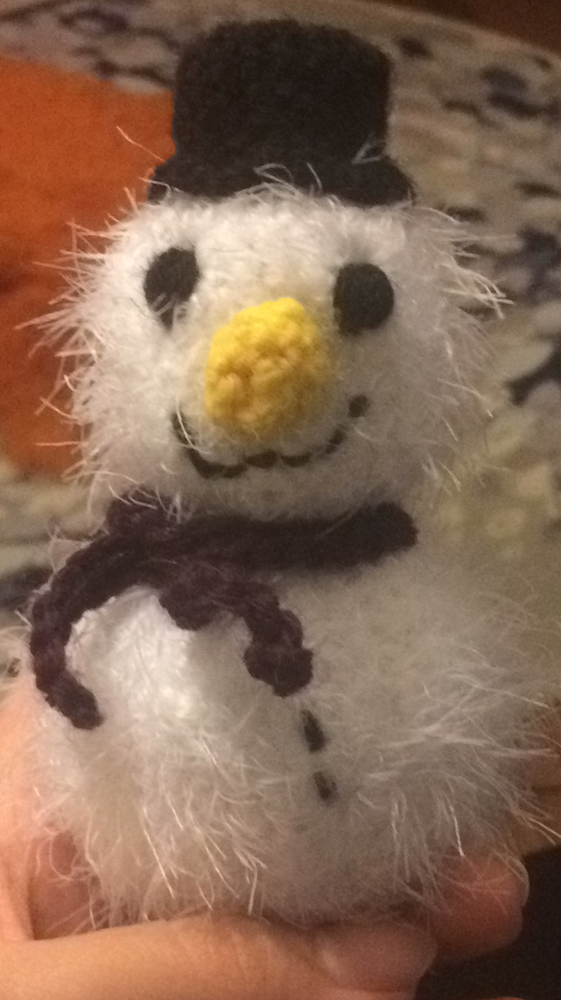
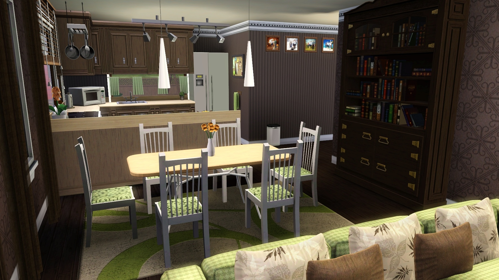
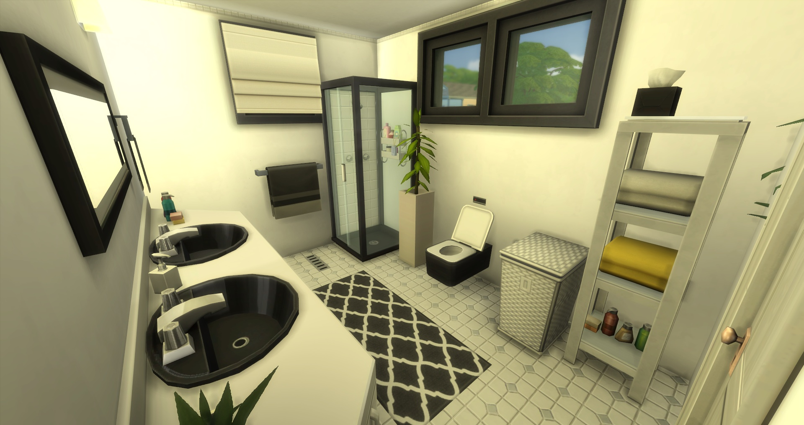

Yksiä ensimmäisiä pelejä, joita koskaan olen pelannut, on The Sims -sarjan pelit. Olen pelannut Simssiä varmaan jo vuodesta 2006 alkaen ja yhä edelleen innostus on säilynyt. Sims on mielestäni todella monipuolinen peli, koska siinä voi tehdä aivan mitä vaan, siksi ehkä se innostuskin on edelleen säilynyt. Simssissä saa olla todella luova ja toteuttaa itseään monella tavalla. Jos pitää arkkitehtuurista tai sisustamisesta, Simssissä on mahdollista rakentaa ja sisustaa todella paljon erinäköisiä taloja. Pelissä on myös mahdollista luoda oma Sim, joka vastaa ihmistä, mikä taas on omalta osaltaan luovaa puuhaa, kun Simille pitää keksiä persoonallinen ulkonäkö ja luonne. Jotku Sims pelaajat tykkäävät tehdä tarinoita Simssin pelaamisestaan, mihin vaaditaan paljon mielikuvitusta.
Muita suosikki pelejäni ovat myös muun muassa Grand Theft Auto V (GTA V), Left 4 Dead, Uncharted-pelisarja, Tomb Raider -pelisarja sekä Spelunky. GTA:ssa pidän eniten online mahdollisuudesta, koska silloin pääsee kavereiden kanssa tekemään kaikkea hauskaa ja yleensä meillä on ollut aivan liian hauskaa. En ole mikään suuri autofanaatikko, mutta GTA:ssa tykkään keräillä erilaisia hienoja autoja. GTA:ssa pidän myös juuri siitä, että saa tehdä asioita, mitä oikeassa elämässä ei saa. Left 4 Dead on myös ollut todella pitkä aikainen suosikki ja siinä aivan parasta on juuri kavereiden kanssa pelaaminen. Ja etenkin silloin, kun peliin lataa jonkinlaista lisäsisältöä, se on todella hauskaa. Uncharted ja Tomb Raider -pelit ovat juuri niitä pelejä, missä on jokin tarina ja sitä tarinaa kuljetaan koko aika eteenpäin. Sen lisäksi pelit ovat myös niin sanottuja seikkailupelejä, missä on joku historiallinen myytti ja sitä lähdetään etsimään tai muuta vastaavaa. Spelunky on taas sellainen hauska peli, jossa mennään vaan erilaisissa kentissä eteenpäin ja yritetään selvitä elossa. Jokainen kenttä on aina ihan erilainen, jonka takia tätäkin peliä on tullu pelattua aivan liikaa. Spelunky on hyvä peli siihen, jos ei ole aikaa tai kiinnostusta aloittaa mitään "kunnon" peliä pelaamaan, mutta huonona puolena on se, että se on todella koukuttava. Näiden pelejen lisäksi on tietysti myös monia muita todella hyviä pelejä.

Yksiä suosikki kirjojani ovat olleet muun muassa Geishan Muistelmat sekä Khaled Hosseinin kirjat. Geishan Muistelmat halusin lukea heti kun olin nähnyt elokuvan telkkarissa. Pidin elokuvasta todella paljon ja halusin tietää millainen se tarina on itse kirjassa. Khaled Hosseinin kirjat taas ovat olleet todella vaikuttavia ja hieman jopa järkyttäviä. Ne ovat olleet todella mielenkiintoista luettavaa ja olisi kivaa lukea lisää vastaavanlaisia. Lisää kirjoista, joitan olen lukenut, löytyy alhaalta Goodreads-linkistä. Samalta sivulta näkee, monta tähteä olen antanut kullekin lukemalleni kirjalle, mitä kirjoja haluan lukea ja mitä luen tällä hetkellä.



Oma sisustusmakuni on aika laaja eli ei ole mitään yhtä tiettyä "tyyliä" mitä tykkään sisutamisessa aina käyttää. Joskus tykkään käyttää todella paljon värejä ja joskus taas hieman vähemmän. Joskus taas sisustustyyli saattaa olla aika perinteikästä ja toisella kertaa hieman ehkä modernimpaa. Joskus olisi mukavaa päästä toteuttamaan ihan oikeita isompia sisustusprojekteja, mutta se on aivan varmasti ihan erilaista kuin Simssissä sisustaminen, joten en lopulta tiedä, miten hyvä tulisin siinä olemaan.